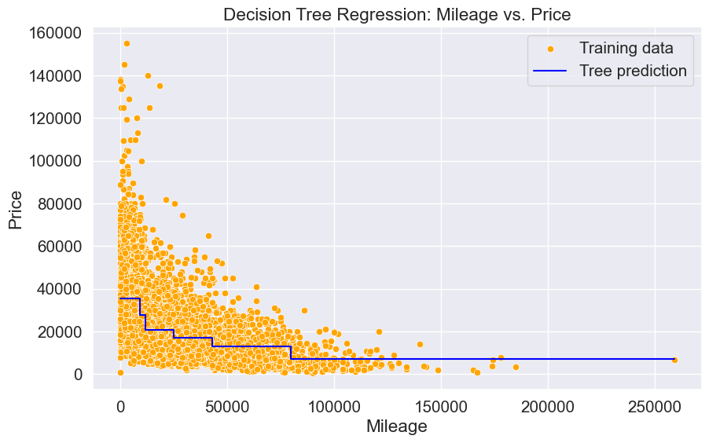
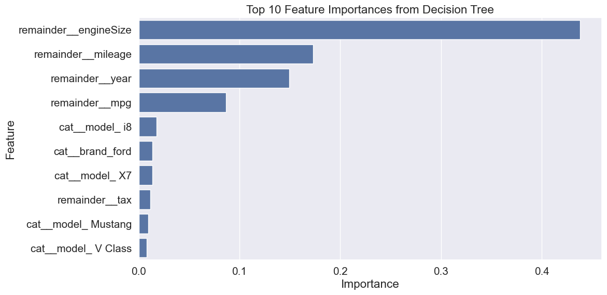

# Importing necessary libraries
import pandas as pd
import numpy as np
import matplotlib.pyplot as plt
import seaborn as sns
sns.set(font_scale=1.35)
# import the decision tree regressor
from sklearn.tree import DecisionTreeRegressor, plot_tree, export_graphviz
# split the dataset into training and testing sets
from sklearn.model_selection import train_test_split
from sklearn.model_selection import cross_val_score, GridSearchCV, cross_val_predict, KFold
from sklearn.pipeline import Pipeline
from sklearn.compose import ColumnTransformer
from sklearn.preprocessing import OneHotEncoder, FunctionTransformer
from sklearn.metrics import root_mean_squared_error, r2_score, make_scorer4 Regression trees
Read section 8.1.1 of the book before using these notes.
Note that in this course, lecture notes are not sufficient, you must read the book for better understanding. Lecture notes are just implementing the concepts of the book on a dataset, but not explaining the concepts elaborately.
We will use the same dataset as in the KNN model for regression trees.
# Load the dataset
car = pd.read_csv('Datasets/car.csv')
car.head()| brand | model | year | transmission | mileage | fuelType | tax | mpg | engineSize | price | |
|---|---|---|---|---|---|---|---|---|---|---|
| 0 | vw | Beetle | 2014 | Manual | 55457 | Diesel | 30 | 65.3266 | 1.6 | 7490 |
| 1 | vauxhall | GTC | 2017 | Manual | 15630 | Petrol | 145 | 47.2049 | 1.4 | 10998 |
| 2 | merc | G Class | 2012 | Automatic | 43000 | Diesel | 570 | 25.1172 | 3.0 | 44990 |
| 3 | audi | RS5 | 2019 | Automatic | 10 | Petrol | 145 | 30.5593 | 2.9 | 51990 |
| 4 | merc | X-CLASS | 2018 | Automatic | 14000 | Diesel | 240 | 35.7168 | 2.3 | 28990 |
4.1 Native Support for Missing Values
Starting with scikit-learn version 1.3, classical tree-based models in scikit-learn have added native support for missing values, which simplifies preprocessing and improves model robustness:
DecisionTreeClassifiersupports missing values as of version 1.3.0
RandomForestClassifieradds support in version 1.4.0
This means you no longer need to impute missing values manually before training these models.
To take advantage of this feature, first check your scikit-learn version:
import sklearn
print(sklearn.__version__)1.6.1If your version is below 1.4.0, you can upgrade by running:
# pip install --upgrade scikit-learn# Make a copy of the original dataset
car_missing = car.copy()
# Randomly add missing values
# Inject missing values into 10% of the 'mileage' column
car_missing.loc[car_missing.sample(frac=0.1, random_state=42).index, 'mileage'] = np.nan
# Inject missing values into 10% of the 'fuelType' and 'engineSize' columns
car_missing.loc[car_missing.sample(frac=0.1, random_state=42).index, 'fuelType'] = np.nan
car_missing.loc[car_missing.sample(frac=0.1, random_state=42).index, 'engineSize'] = np.nancar_missing.isna().sum()brand 0
model 0
year 0
transmission 0
mileage 763
fuelType 763
tax 0
mpg 0
engineSize 763
price 0
dtype: int64# Split the car_missing dataset into features and target
X_missing = car_missing.drop(columns=['price'])
y_missing = car_missing['price']4.1.1 Build a regression tree using mileage as the solo predictor
# Use only 'mileage' as the feature
X_mileage = X_missing[['mileage']]
y_mileage = y_missing# Create a DecisionTreeRegressor model
reg_tree = DecisionTreeRegressor(random_state=42)
# Fit the model to the data
reg_tree.fit(X_mileage, y_mileage)DecisionTreeRegressor(random_state=42)In a Jupyter environment, please rerun this cell to show the HTML representation or trust the notebook.
On GitHub, the HTML representation is unable to render, please try loading this page with nbviewer.org.
DecisionTreeRegressor(random_state=42)
# Predict the target variable using the model
y_pred = reg_tree.predict(X_mileage)
# Calculate the RMSE and R² score
rmse = np.sqrt(np.mean((y_missing - y_pred) ** 2))
r2 = r2_score(y_missing, y_pred)
print(f"RMSE: {rmse:.2f}")
print(f"R²: {r2:.2f}")RMSE: 8797.85
R²: 0.714.2 Building regression trees
X = car.drop(columns=['price'])
y = car['price']X_train, X_test, y_train, y_test = train_test_split(X, y, test_size=0.2, random_state=42)4.2.1 Using only mileage feature
# Use only 'mileage' as the feature
X_train_mileage = X_train[['mileage']]
X_test_mileage = X_test[['mileage']]
# Create a DecisionTreeRegressor model
reg_tree = DecisionTreeRegressor(random_state=42, max_depth=3)
# Fit the model to the training data
reg_tree.fit(X_train_mileage, y_train)
# Predict the target variable using the model
y_pred = reg_tree.predict(X_test_mileage)
# Calculate the RMSE and R² score
rmse = np.sqrt(np.mean((y_test - y_pred) ** 2))
r2 = r2_score(y_test, y_pred)
print(f"RMSE using only mileage predictor: {rmse:.2f}")
print(f"R² using only mileage predictor: {r2:.2f}")RMSE using only mileage predictor: 14437.80
R² using only mileage predictor: 0.29Let’s visualize the tree structure
# Plot the tree
plt.figure(figsize=(18, 6))
plot_tree(reg_tree, feature_names=['mileage'], filled=True, rounded=True)
plt.title("Regression Tree Using Mileage")
plt.show()Let’s visualize how mileage is used in the decision tree below:
# Create evenly spaced mileage values within the range of training data
Xtest = np.linspace(X_train_mileage['mileage'].min(), X_train_mileage['mileage'].max(), 100).reshape(-1, 1)
# Convert Xtest to a DataFrame with the correct column name
Xtest_df = pd.DataFrame(Xtest, columns=['mileage'])
# Predict using the DataFrame instead of NumPy array
ytest_pred = reg_tree.predict(Xtest_df)
plt.figure(figsize=(10, 6))
sns.scatterplot(x=X_train_mileage['mileage'], y=y_train, color='orange', label='Training data')
# Step plot to reflect piecewise constant predictions
plt.step(Xtest_df['mileage'], ytest_pred, color='blue', label='Tree prediction', where='mid')
plt.xlabel("Mileage")
plt.ylabel("Price")
plt.title("Decision Tree Regression: Mileage vs. Price")
plt.legend()
plt.show()
All cars falling within the same terminal node have the same predicted price, which is seen as flat line segments in the above model curve.
4.2.2 Using mileage and brand as predictors
X_train.head() | brand | model | year | transmission | mileage | fuelType | tax | mpg | engineSize | |
|---|---|---|---|---|---|---|---|---|---|
| 216 | vw | Scirocco | 2016 | Manual | 41167 | Diesel | 20 | 55.2654 | 2.0 |
| 4381 | merc | CLS Class | 2018 | Semi-Auto | 12078 | Diesel | 145 | 47.7624 | 2.9 |
| 6891 | hyundi | Santa Fe | 2019 | Automatic | 623 | Diesel | 145 | 43.0887 | 2.2 |
| 421 | hyundi | IX35 | 2014 | Manual | 37095 | Diesel | 145 | 53.4862 | 1.7 |
| 505 | ford | Edge | 2016 | Semi-Auto | 15727 | Diesel | 160 | 49.0741 | 2.0 |
# Select features and target
X_train_tree = X_train[['mileage', 'brand']]
X_test_tree = X_test[['mileage', 'brand']]# One-hot encode the categorical variable 'brand'
X_train_tree_encoded = pd.get_dummies(X_train_tree, columns=['brand'])
X_test_tree_encoded = pd.get_dummies(X_test_tree, columns=['brand'])model = DecisionTreeRegressor(max_depth=3, random_state=42)
model.fit(X_train_tree_encoded, y_train)DecisionTreeRegressor(max_depth=3, random_state=42)In a Jupyter environment, please rerun this cell to show the HTML representation or trust the notebook.
On GitHub, the HTML representation is unable to render, please try loading this page with nbviewer.org.
DecisionTreeRegressor(max_depth=3, random_state=42)
plt.figure(figsize=(12, 6))
plot_tree(model, feature_names=X_train_tree_encoded.columns, filled=True, rounded=True)
plt.title("Decision Tree Using Mileage and Brand to Predict Price")
plt.show()# Predict the target variable using the model
y_pred_tree = model.predict(X_test_tree_encoded)
# Calculate the RMSE and R² score
rmse_tree = np.sqrt(np.mean((y_test - y_pred_tree) ** 2))
r2_tree = r2_score(y_test, y_pred_tree)
print(f"RMSE using mileage and brand predictor: {rmse_tree:.2f}")
print(f"R² using mileage and brand predictor: {r2_tree:.2f}")
# Compare the performance of the two models
print(f"RMSE using only mileage predictor: {rmse:.2f}")
print(f"RMSE using mileage and brand predictor: {rmse_tree:.2f}")
# The RMSE using mileage and brand predictor is lower than using only mileage predictor.
# This indicates that adding the brand feature improves the model's performanceRMSE using mileage and brand predictor: 12531.44
R² using mileage and brand predictor: 0.46
RMSE using only mileage predictor: 14437.80
RMSE using mileage and brand predictor: 12531.444.2.3 Using all predictors
Now that we’ve explored a single predictor (mileage) and added a second predictor (brand), let’s take it a step further and use all available features to build a more robust model.
We’ll construct a pipeline that handles necessary preprocessing steps (e.g., categorical encoding) and fits a Decision Tree Regressor in a streamlined and reproducible way.
# extract the categorical columns and put them in a list
categorical_feature = X.select_dtypes(include=['object']).columns.tolist()
# extract the numerical columns and put them in a list
numerical_feature = X.select_dtypes(include=['int64', 'float64']).columns.tolist()
# Create a ColumnTransformer to handle encoding
preprocessor = ColumnTransformer(
transformers=[
('cat', OneHotEncoder(handle_unknown='ignore'), categorical_feature)
],
remainder='passthrough', # Keep numerical feature (mileage) unchanged
force_int_remainder_cols=False
)
# Create the pipeline
pipeline = Pipeline(steps=[
('preprocessor', preprocessor),
('regressor', DecisionTreeRegressor(max_depth=4, random_state=42))
])
# Usage:
pipeline.fit(X_train, y_train)
y_pred = pipeline.predict(X_test)
# Calculate the RMSE and R² score
rmse_pipeline = np.sqrt(np.mean((y_test - y_pred) ** 2))
r2_pipeline = r2_score(y_test, y_pred)
print(f"RMSE using pipeline: {rmse_pipeline:.2f}")
print(f"R² using pipeline: {r2_pipeline:.2f}")RMSE using pipeline: 8186.34
R² using pipeline: 0.77# let's visuzalize the decision tree
plt.figure(figsize=(12, 6))
plot_tree(pipeline.named_steps['regressor'], feature_names=pipeline.named_steps['preprocessor'].get_feature_names_out(), filled=True, rounded=True)
plt.title("Decision Tree Using Pipeline")
plt.show()
4.3 Key Hyperparameters in Decision Tree
In regression trees, model complexity is controlled by hyperparameters, tuning them is crucial for balancing underfitting and overfitting.
4.3.1 Underfitting
- The model is too simple to capture patterns in the data.
- High bias, low variance.
- Often caused by:
- Shallow trees (
max_depthis too small) - Too strict constraints (
min_samples_splitormin_samples_leafis too high)
- Shallow trees (
4.3.2 Overfitting
- The model is too complex and learns noise from the training data.
- Low bias, high variance.
- Often caused by:
- Deep trees with many splits
- Very small
min_samples_leaformin_samples_split
Below are the most commonly used hyperparameters:
4.3.3 max_depth
- Controls the maximum depth of the tree.
- If
None, the tree will expand until all leaves are pure or contain fewer thanmin_samples_splitsamples. - Controls overfitting (deep trees → overfit, shallow trees → underfit)
- Typical values: 3 to 20 (start with lower values).
4.3.4 min_samples_split
- The minimum number of samples required to split an internal node.
- higher values → simpler trees (reducing overfitting)
4.3.5 min_samples_leaf
- The minimum number of samples required to be at a leaf node.
- Setting this to a higher number can smooth the model by reducing variance.
4.3.6 max_features
Number of features to consider when looking for the best split.
Can be set to:
"auto"orNone: use all features"sqrt": use the square root of the number of features"log2": use log base 2
# Define your parameter grid with pipeline step prefix
param_grid = {
'regressor__max_depth': [3, 5, 7, 10, None],
'regressor__min_samples_split': [2, 5, 10],
'regressor__min_samples_leaf': [1, 2, 4],
'regressor__max_features': ['sqrt', None]
}
# Create custom scorer for RMSE
rmse_scorer = make_scorer(lambda y_true, y_pred: root_mean_squared_error(y_true, y_pred),
greater_is_better=False)
# Create GridSearchCV object
grid_search = GridSearchCV(
estimator=pipeline,
param_grid=param_grid,
scoring={
'RMSE': rmse_scorer,
'R2': 'r2'
},
refit='R2',
cv=5,
n_jobs=-1,
verbose=1
)
# Fit the grid search to training data
grid_search.fit(X_train, y_train)Fitting 5 folds for each of 270 candidates, totalling 1350 fitsGridSearchCV(cv=5,
estimator=Pipeline(steps=[('preprocessor',
ColumnTransformer(force_int_remainder_cols=False,
remainder='passthrough',
transformers=[('cat',
OneHotEncoder(handle_unknown='ignore'),
['brand',
'model',
'transmission',
'fuelType'])])),
('regressor',
DecisionTreeRegressor(max_depth=4,
random_state=42))]),
n_jobs=-1,
param_grid={'regressor__ccp_alpha': [0.001, 0.01, 0.1],
'regressor__max_depth': [3, 5, 7, 10, None],
'regressor__max_features': ['sqrt', None],
'regressor__min_samples_leaf': [1, 2, 4],
'regressor__min_samples_split': [2, 5, 10]},
refit='R2',
scoring={'R2': 'r2',
'RMSE': make_scorer(<lambda>, greater_is_better=False, response_method='predict')},
verbose=1)In a Jupyter environment, please rerun this cell to show the HTML representation or trust the notebook. On GitHub, the HTML representation is unable to render, please try loading this page with nbviewer.org.
GridSearchCV(cv=5,
estimator=Pipeline(steps=[('preprocessor',
ColumnTransformer(force_int_remainder_cols=False,
remainder='passthrough',
transformers=[('cat',
OneHotEncoder(handle_unknown='ignore'),
['brand',
'model',
'transmission',
'fuelType'])])),
('regressor',
DecisionTreeRegressor(max_depth=4,
random_state=42))]),
n_jobs=-1,
param_grid={'regressor__ccp_alpha': [0.001, 0.01, 0.1],
'regressor__max_depth': [3, 5, 7, 10, None],
'regressor__max_features': ['sqrt', None],
'regressor__min_samples_leaf': [1, 2, 4],
'regressor__min_samples_split': [2, 5, 10]},
refit='R2',
scoring={'R2': 'r2',
'RMSE': make_scorer(<lambda>, greater_is_better=False, response_method='predict')},
verbose=1)Pipeline(steps=[('preprocessor',
ColumnTransformer(force_int_remainder_cols=False,
remainder='passthrough',
transformers=[('cat',
OneHotEncoder(handle_unknown='ignore'),
['brand', 'model',
'transmission',
'fuelType'])])),
('regressor',
DecisionTreeRegressor(ccp_alpha=0.001, min_samples_split=5,
random_state=42))])ColumnTransformer(force_int_remainder_cols=False, remainder='passthrough',
transformers=[('cat', OneHotEncoder(handle_unknown='ignore'),
['brand', 'model', 'transmission',
'fuelType'])])['brand', 'model', 'transmission', 'fuelType']
OneHotEncoder(handle_unknown='ignore')
['year', 'mileage', 'tax', 'mpg', 'engineSize']
passthrough
DecisionTreeRegressor(ccp_alpha=0.001, min_samples_split=5, random_state=42)
The GridSearchCV setup evaluates both RMSE and R² during cross-validation.
- R² is used to select the best model and is also used to refit the model on the entire training set.
- RMSE is computed during the process for evaluation purposes, but it is not used to determine the best model.
This allows for more comprehensive model assessment while still optimizing based on a single selected metric.
# Get best estimator and predictions
best_model = grid_search.best_estimator_
y_pred_tuned = best_model.predict(X_test)
# Calculate metrics for tuned model
rmse_tuned = root_mean_squared_error(y_test, y_pred_tuned)
r2_tuned = r2_score(y_test, y_pred_tuned)print("\n=== Best Parameters ===")
print(grid_search.best_params_)
print("\n=== Tuned Model Performance ===")
print(f"RMSE (Tuned): {rmse_tuned:.2f}")
print(f"R² (Tuned): {r2_tuned:.2f}")
print(f"Improvement in R²: {(r2_tuned - r2_pipeline):.2%}")
=== Best Parameters ===
{'regressor__ccp_alpha': 0.001, 'regressor__max_depth': None, 'regressor__max_features': None, 'regressor__min_samples_leaf': 1, 'regressor__min_samples_split': 5}
=== Tuned Model Performance ===
RMSE (Tuned): 4726.17
R² (Tuned): 0.92
Improvement in R²: 15.23%print("\n=== Best Parameters ===")
print(grid_search.best_params_)
print("\n=== Tuned Model Performance ===")
print(f"RMSE (Tuned): {rmse_tuned:.2f}")
print(f"R² (Tuned): {r2_tuned:.2f}")
print(f"Improvement in R²: {(r2_tuned - r2_pipeline):.2%}")
=== Best Parameters ===
{'regressor__ccp_alpha': 0.001, 'regressor__max_depth': None, 'regressor__max_features': None, 'regressor__min_samples_leaf': 1, 'regressor__min_samples_split': 5}
=== Tuned Model Performance ===
RMSE (Tuned): 4726.17
R² (Tuned): 0.92
Improvement in R²: 15.23%GridSearchCV improves the r squared from 0.77 to 0.92, increased by 15.23%, Let us visualize the mean squared error based on the hyperparameter values. We’ll use the cross validation results stored in the cv_results_ attribute of the GridSearchCV fit() object.
#Detailed results of k-fold cross validation
cv_results = pd.DataFrame(grid_search.cv_results_)
cv_results.head()| mean_fit_time | std_fit_time | mean_score_time | std_score_time | param_regressor__ccp_alpha | param_regressor__max_depth | param_regressor__max_features | param_regressor__min_samples_leaf | param_regressor__min_samples_split | params | ... | std_test_RMSE | rank_test_RMSE | split0_test_R2 | split1_test_R2 | split2_test_R2 | split3_test_R2 | split4_test_R2 | mean_test_R2 | std_test_R2 | rank_test_R2 | |
|---|---|---|---|---|---|---|---|---|---|---|---|---|---|---|---|---|---|---|---|---|---|
| 0 | 0.075184 | 0.013049 | 0.009999 | 0.001052 | 0.001 | 3 | sqrt | 1 | 2 | {'regressor__ccp_alpha': 0.001, 'regressor__ma... | ... | 607.458245 | 250 | 0.42527 | 0.37778 | 0.538252 | 0.37182 | 0.364829 | 0.415590 | 0.064903 | 250 |
| 1 | 0.078505 | 0.014115 | 0.010804 | 0.001051 | 0.001 | 3 | sqrt | 1 | 5 | {'regressor__ccp_alpha': 0.001, 'regressor__ma... | ... | 607.458245 | 250 | 0.42527 | 0.37778 | 0.538252 | 0.37182 | 0.364829 | 0.415590 | 0.064903 | 250 |
| 2 | 0.077370 | 0.011081 | 0.010873 | 0.000946 | 0.001 | 3 | sqrt | 1 | 10 | {'regressor__ccp_alpha': 0.001, 'regressor__ma... | ... | 606.926403 | 244 | 0.42527 | 0.37778 | 0.538252 | 0.37182 | 0.365155 | 0.415655 | 0.064852 | 244 |
| 3 | 0.036274 | 0.036182 | 0.010617 | 0.000345 | 0.001 | 3 | sqrt | 2 | 2 | {'regressor__ccp_alpha': 0.001, 'regressor__ma... | ... | 607.458245 | 250 | 0.42527 | 0.37778 | 0.538252 | 0.37182 | 0.364829 | 0.415590 | 0.064903 | 250 |
| 4 | 0.018702 | 0.003564 | 0.012120 | 0.004090 | 0.001 | 3 | sqrt | 2 | 5 | {'regressor__ccp_alpha': 0.001, 'regressor__ma... | ... | 607.458245 | 250 | 0.42527 | 0.37778 | 0.538252 | 0.37182 | 0.364829 | 0.415590 | 0.064903 | 250 |
5 rows × 26 columns
# Plotting the RMSE for different max_depth values
plt.figure(figsize=(12, 6))
sns.lineplot(data=cv_results, x='param_regressor__max_depth', y=np.abs(cv_results['mean_test_RMSE']), marker='o')
plt.xlabel('Max Depth')
plt.ylabel('Mean Test RMSE')
plt.title('RMSE vs Max Depth');
4.3.7 Output feature importance
# Get feature importances and names
feature_importances = best_model.named_steps['regressor'].feature_importances_
feature_names = best_model.named_steps['preprocessor'].get_feature_names_out()
# Create DataFrame and select top 10
feature_importance_df = (
pd.DataFrame({'Feature': feature_names, 'Importance': feature_importances})
.sort_values(by='Importance', ascending=False)
.head(10) # Keep only top 10 features
)
# Print top 10 features
print("=== Top 10 Feature Importances ===")
print(feature_importance_df)
# Plot top 10 features
plt.figure(figsize=(12, 6))
sns.barplot(data=feature_importance_df, x='Importance', y='Feature')
plt.title('Top 10 Feature Importances from Decision Tree')
plt.xlabel('Importance')
plt.ylabel('Feature')
plt.tight_layout()
plt.show()=== Top 10 Feature Importances ===
Feature Importance
112 remainder__engineSize 0.437921
109 remainder__mileage 0.173215
108 remainder__year 0.149303
111 remainder__mpg 0.086922
98 cat__model_ i8 0.017971
2 cat__brand_ford 0.013837
92 cat__model_ X7 0.013477
110 remainder__tax 0.011502
60 cat__model_ Mustang 0.009517
86 cat__model_ V Class 0.008147
4.4 Cost-Complexity Pruning (ccp_alpha)
Cost-complexity pruning is a post-pruning technique used to reduce the size of a decision tree by removing sections that provide little to no improvement in prediction accuracy. It helps prevent overfitting and improves model generalization.
4.4.1 Key Idea
Each subtree in a decision tree has an associated cost-complexity score:
$ R_(T) = R(T) + |T| $
- $ R(T) $: Total training error of the tree ( T )
- $ |T| $: Number of leaf nodes in the tree
- \(alpha\) (ccp_alpha): Complexity parameter that penalizes tree size
As \(alpha\) increases, the tree is pruned more aggressively.
4.4.2 Parameter: ccp_alpha in scikit-learn
- Available in
DecisionTreeRegressorandDecisionTreeClassifier - Default:
ccp_alpha = 0.0(no pruning) - Increasing
ccp_alphaencourages simpler trees by penalizing extra leaf nodes
from sklearn.model_selection import GridSearchCV
from sklearn.metrics import make_scorer, mean_squared_error
import numpy as np
# Define your parameter grid with pipeline step prefix
param_grid = {
'regressor__ccp_alpha': [0.0, 0.001, 0.01, 0.1]
}
# Create custom scorer for RMSE
rmse_scorer = make_scorer(lambda y_true, y_pred: np.sqrt(mean_squared_error(y_true, y_pred)),
greater_is_better=False)
# Create GridSearchCV object
grid_search_ccp = GridSearchCV(
estimator=pipeline,
param_grid=param_grid,
scoring={
'RMSE': rmse_scorer,
'R2': 'r2'
},
refit='R2',
cv=5,
n_jobs=-1,
verbose=1
)
# Fit the grid search to training data
grid_search_ccp.fit(X_train, y_train)Fitting 5 folds for each of 4 candidates, totalling 20 fitsGridSearchCV(cv=5,
estimator=Pipeline(steps=[('preprocessor',
ColumnTransformer(force_int_remainder_cols=False,
remainder='passthrough',
transformers=[('cat',
OneHotEncoder(handle_unknown='ignore'),
['brand',
'model',
'transmission',
'fuelType'])])),
('regressor',
DecisionTreeRegressor(max_depth=4,
random_state=42))]),
n_jobs=-1,
param_grid={'regressor__ccp_alpha': [0.0, 0.001, 0.01, 0.1]},
refit='R2',
scoring={'R2': 'r2',
'RMSE': make_scorer(<lambda>, greater_is_better=False, response_method='predict')},
verbose=1)In a Jupyter environment, please rerun this cell to show the HTML representation or trust the notebook. On GitHub, the HTML representation is unable to render, please try loading this page with nbviewer.org.
GridSearchCV(cv=5,
estimator=Pipeline(steps=[('preprocessor',
ColumnTransformer(force_int_remainder_cols=False,
remainder='passthrough',
transformers=[('cat',
OneHotEncoder(handle_unknown='ignore'),
['brand',
'model',
'transmission',
'fuelType'])])),
('regressor',
DecisionTreeRegressor(max_depth=4,
random_state=42))]),
n_jobs=-1,
param_grid={'regressor__ccp_alpha': [0.0, 0.001, 0.01, 0.1]},
refit='R2',
scoring={'R2': 'r2',
'RMSE': make_scorer(<lambda>, greater_is_better=False, response_method='predict')},
verbose=1)Pipeline(steps=[('preprocessor',
ColumnTransformer(force_int_remainder_cols=False,
remainder='passthrough',
transformers=[('cat',
OneHotEncoder(handle_unknown='ignore'),
['brand', 'model',
'transmission',
'fuelType'])])),
('regressor',
DecisionTreeRegressor(max_depth=4, random_state=42))])ColumnTransformer(force_int_remainder_cols=False, remainder='passthrough',
transformers=[('cat', OneHotEncoder(handle_unknown='ignore'),
['brand', 'model', 'transmission',
'fuelType'])])['brand', 'model', 'transmission', 'fuelType']
OneHotEncoder(handle_unknown='ignore')
['year', 'mileage', 'tax', 'mpg', 'engineSize']
passthrough
DecisionTreeRegressor(max_depth=4, random_state=42)
encoder = OneHotEncoder(handle_unknown='ignore', sparse_output=False)
X_train_encoded = encoder.fit_transform(X_train[categorical_feature])
X_test_encoded = encoder.transform(X_test[categorical_feature])
# Convert the encoded features back to DataFrame
X_train_encoded_df = pd.DataFrame(X_train_encoded, columns=encoder.get_feature_names_out(categorical_feature))
X_test_encoded_df = pd.DataFrame(X_test_encoded, columns=encoder.get_feature_names_out(categorical_feature))
# Concatenate the encoded features with the original numerical features
X_train_final = pd.concat([X_train_encoded_df, X_train[numerical_feature].reset_index(drop=True)], axis=1)
X_test_final = pd.concat([X_test_encoded_df, X_test[numerical_feature].reset_index(drop=True)], axis=1)
# Check the final shape of the training and testing sets
print("Training set shape:", X_train_final.shape)
print("Testing set shape:", X_test_final.shape)
# Check the first few rows of the final training set
X_train_final.head()
# Check the first few rows of the final testing setTraining set shape: (6105, 113)
Testing set shape: (1527, 113)| brand_audi | brand_bmw | brand_ford | brand_hyundi | brand_merc | brand_skoda | brand_toyota | brand_vauxhall | brand_vw | model_ 6 Series | ... | fuelType_Diesel | fuelType_Electric | fuelType_Hybrid | fuelType_Other | fuelType_Petrol | year | mileage | tax | mpg | engineSize | |
|---|---|---|---|---|---|---|---|---|---|---|---|---|---|---|---|---|---|---|---|---|---|
| 0 | 0.0 | 0.0 | 0.0 | 0.0 | 0.0 | 0.0 | 0.0 | 0.0 | 1.0 | 0.0 | ... | 1.0 | 0.0 | 0.0 | 0.0 | 0.0 | 2016 | 41167 | 20 | 55.2654 | 2.0 |
| 1 | 0.0 | 0.0 | 0.0 | 0.0 | 1.0 | 0.0 | 0.0 | 0.0 | 0.0 | 0.0 | ... | 1.0 | 0.0 | 0.0 | 0.0 | 0.0 | 2018 | 12078 | 145 | 47.7624 | 2.9 |
| 2 | 0.0 | 0.0 | 0.0 | 1.0 | 0.0 | 0.0 | 0.0 | 0.0 | 0.0 | 0.0 | ... | 1.0 | 0.0 | 0.0 | 0.0 | 0.0 | 2019 | 623 | 145 | 43.0887 | 2.2 |
| 3 | 0.0 | 0.0 | 0.0 | 1.0 | 0.0 | 0.0 | 0.0 | 0.0 | 0.0 | 0.0 | ... | 1.0 | 0.0 | 0.0 | 0.0 | 0.0 | 2014 | 37095 | 145 | 53.4862 | 1.7 |
| 4 | 0.0 | 0.0 | 1.0 | 0.0 | 0.0 | 0.0 | 0.0 | 0.0 | 0.0 | 0.0 | ... | 1.0 | 0.0 | 0.0 | 0.0 | 0.0 | 2016 | 15727 | 160 | 49.0741 | 2.0 |
5 rows × 113 columns
model = DecisionTreeRegressor(random_state = 1)#model without any restrictions
path= model.cost_complexity_pruning_path(X_train_final,y_train)# Compute the pruning path during Minimal Cost-Complexity Pruning.# Extract the effective alphas and the corresponding performance metrics
ccp_alphas = path.ccp_alphas
impurities = path.impurities
# Create a DataFrame to store the results
ccp_results = pd.DataFrame({'ccp_alpha': ccp_alphas, 'impurity': impurities})
# Fit the model for each alpha value and calculate the mean test score
mean_test_scores = []
for alpha in ccp_alphas:
model = DecisionTreeRegressor(random_state=1, ccp_alpha=alpha)
model.fit(X_train_final, y_train)
y_pred = model.predict(X_test_final)
mean_test_scores.append(np.sqrt(mean_squared_error(y_test, y_pred)))
# Add the mean test scores to the DataFrame
ccp_results['mean_test_score'] = mean_test_scores
# Plot the results
plt.figure(figsize=(12, 6))
plt.plot(ccp_results['ccp_alpha'], ccp_results['mean_test_score'], marker='o')
plt.xlabel('ccp_alpha')
plt.ylabel('Mean Test RMSE')
plt.title('Effect of ccp_alpha on Test RMSE')
plt.xscale('log')
plt.grid()